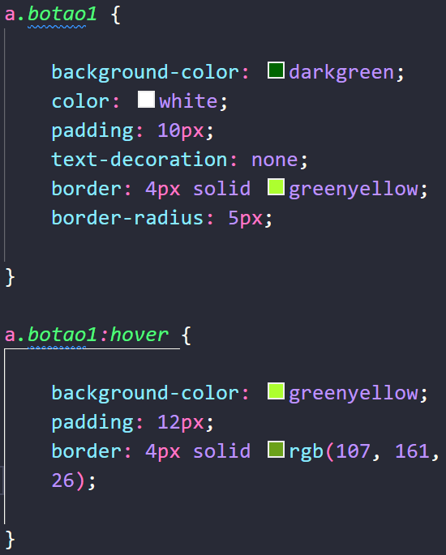
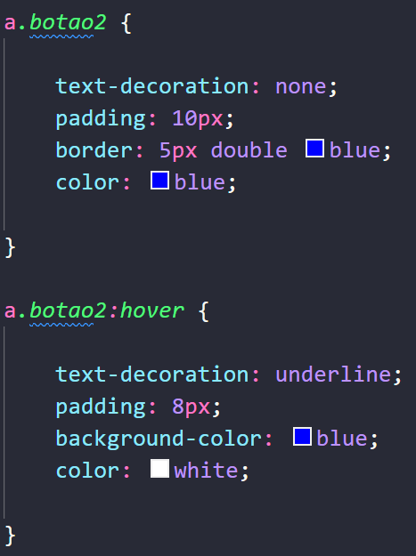
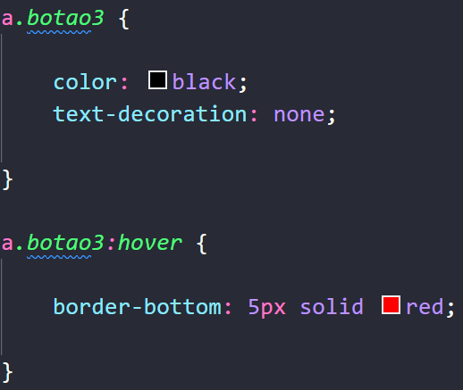
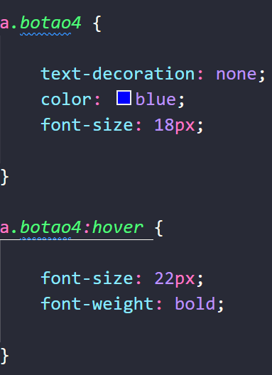
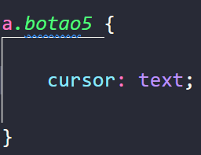

Vamos aprender a fazer variações de botões com links, ou seja, fazer a estilização de links. A vantagem de ter
em mente essas variações é que podemos utilizar diferentes estilos para links dentro do nosso site. A seguir,
vamos duplicar vários links iguais para conseguirmos estilizar e explicar de forma bem objetiva a estilização.
Quando precisamos trabalhar com uma classe referente a link, podemos utilizar um seletor mais especifico que
seria: a."classe desejada". Dessa forma, especificamos que a propriedade CSS só vai
funcionar nesse caso, se for um link e tiver a class "botao1", por exemplo, caso usarmos a class "botao1" em um
parágrafo, oque for adicionado não será atribuído ao nosso parágrafo.
Esse primeiro botão seria o mais básico de se fazer, que seria colocando um background, ou
seja, uma cor de fundo de preferencia do desenvolvedor, após isso, vamos selecionar a cor que queremos que sejam
nossas letras usando o color, vamos adicionar um padding de 10px,
eliminar todas as decorações do texto do link com a propriedade text-decoration: none,
colocar uma border verde de 4px sólida e arredondar nossa borda com a propriedade
border-radius. Além disso, vamos adicionar a mudança do nosso botão, oque acontece quando passamos o mouse em
cima do nosso botão.
Para isso vamos copiar o código CSS do nosso botão e atualizarmos as tags, background para
um verde um pouco mais claro, vamos aumentar nosso padding para 12px e vamos alterar a cor da nossa borda para
um verde um pouco mas escuro, o restante nos não precisando adicionar.
(Obs.: Todas as propriedades foram vistas e explicadas no na página anterior sobre propriedades clique aqui para ver mais.)
No nosso código CSS ficaria da seguinte forma:

E o resultado é:
Voltar para a principal
Para nosso segundo botão iremos fazer de uma forma um pouco diferente, vamos criar uma classe no nosso código
CSS chamada botao2, sempre colocar "a." antes para especificarmos nossa classe diretamente
ao
links. De inicio, vamos eliminar as decorações do texto do nosso link com a propriedade text-decoration: none,
vamos
também fazer com que ele seja "invisível" com uma bordinha, para isso vamos colocar um padding de 10px com uma
borda
de 5px dupla da cor azul, mudar a cor do nosso link para azul assim como a bordar com a propriedade color e
vamos
dizer que quando o usuário passar o curso em cima ele ira se preencher, além disso, o texto do nosso link ficará
com
a decoração de sublinhado, diminuir o padding para 8, removemos a bordar e colocamos o background em azul com a
cor
do texto em branco.
No código CSS fica da seguinte maneira:

E o resultado seria:
Voltar para a principal
Para o Botão 3, vamos fazer de uma forma diferente, fazer um estilo de botão para menu ou um botão
superior, para isso fazer criar a class botao3 no nosso CSS, colocar a color dele sendo
preto, o text-decoration: none e fazer dizer que quando a pessoa passar o mouse em cima dele vai aparecer uma
bordar vermelha de 5px.
(Obs.: Esse tipo de botão é bastante utilizado nos rodapés das páginas webs e para os menus também.)
Código CSS:

Resultando em:
Voltar para a principal
No botão 4 vamos trabalhar mais a questão das fontes e o estilo delas, então no nosso botao4 poderíamos colocar
o text-decoration como none, a color dela azul, o font-size em 18px e quando passarmos o mouse em cima, podemos
fazer com que o tamanho da fonte aumente, para isso falaríamos que o font-size dele será de 22px e dizer que a
grossura de font será em negrito com a propriedade font-weight:bold.

Resultado:
Voltar para a principal
Para nosso ultimo botão vamos ver a questão de mudança de cursor, quando colocarmos o mouse em cima de qualquer
link ele vai ficar com esse efeito de cursor. Vamos criar nossa class botao5 no CSS e passar
a propriedade chamada cursor e teremos varios estilos de cursos para usarmos, por exemplo, se utilizarmos o
none, assim como no caso do sublinhado no link, nosso cursor ira sumir. Vamos utilizar o cursor de texto, que
seria uma barra ao passarmos o curso em cima do link. Dessa forma podemos determinar qual será o comportamento
do nosso cursor ao passarmos ele em cima dos links.
No CSS ficará:

Voltar para a principal
A estilização de links é uma ferramenta essencial para criar uma experiência mais agradável e intuitiva para os usuários de um site. Como vimos, existem diversas maneiras de personalizar links, desde botões básicos até efeitos mais avançados, como mudanças de cor, tamanho de fonte e até mesmo a aparência do cursor. Ao utilizar seletores específicos, como a.classe, conseguimos aplicar estilos exclusivos para os links sem afetar outros elementos da página. Além disso, as interações com o :hover permitem tornar os botões mais dinâmicos, proporcionando feedback visual ao usuário. Com criatividade e um bom uso do CSS, podemos transformar links simples em elementos estilizados e funcionais, agregando valor ao design e à usabilidade do site. Agora, é só aplicar essas técnicas e explorar novas possibilidades para personalizar ainda mais seus links!